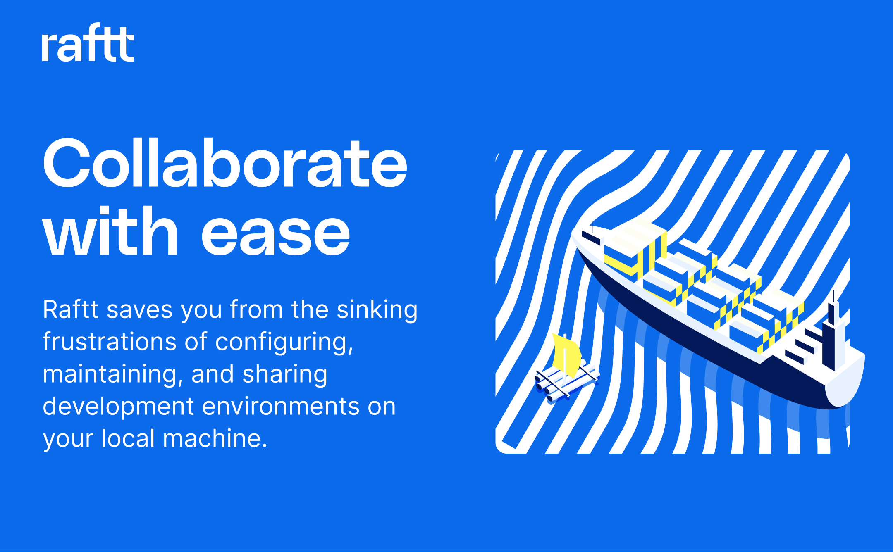
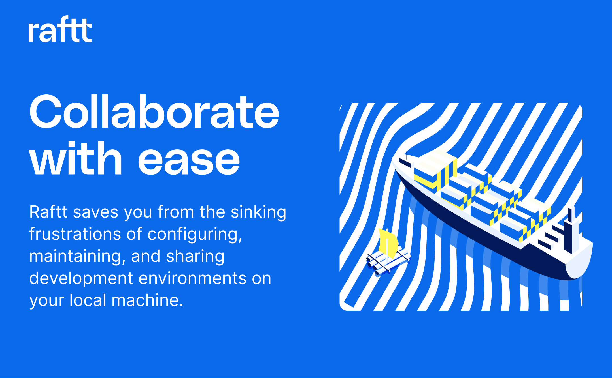
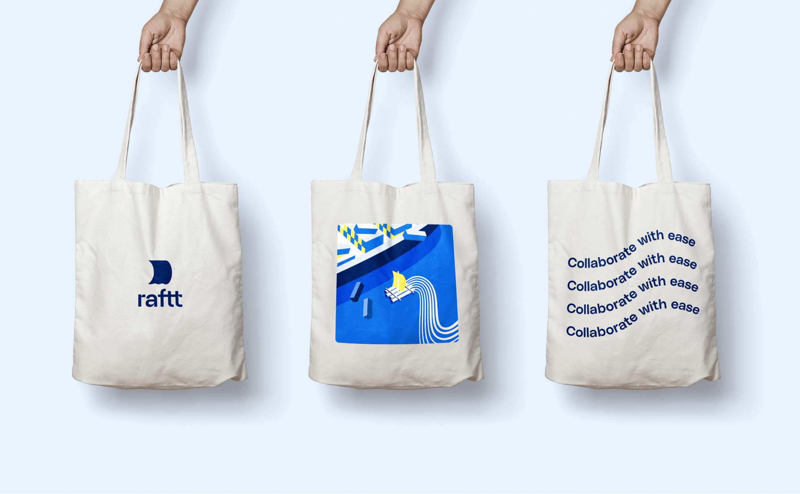
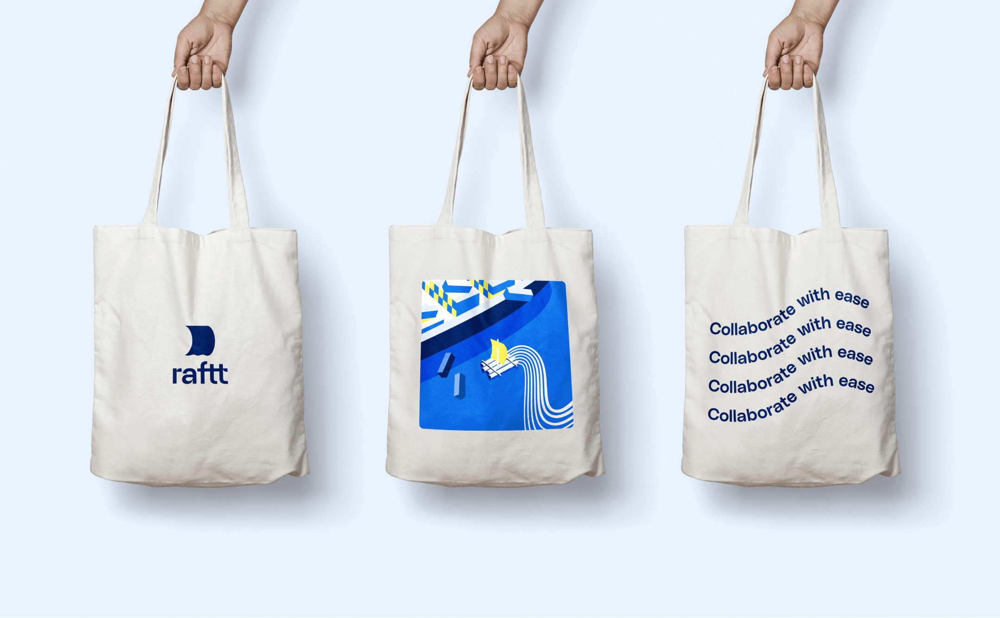
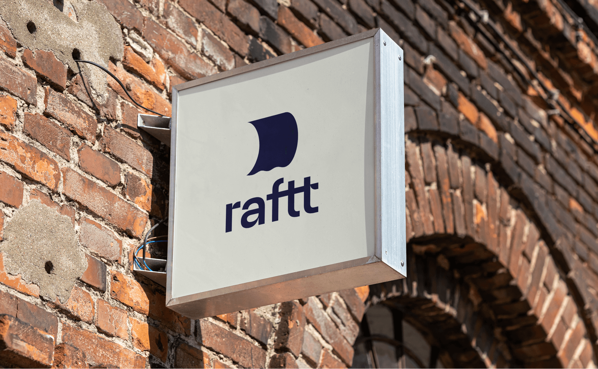
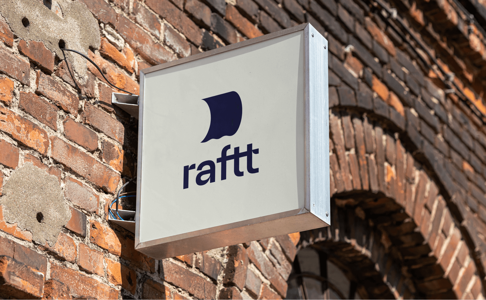
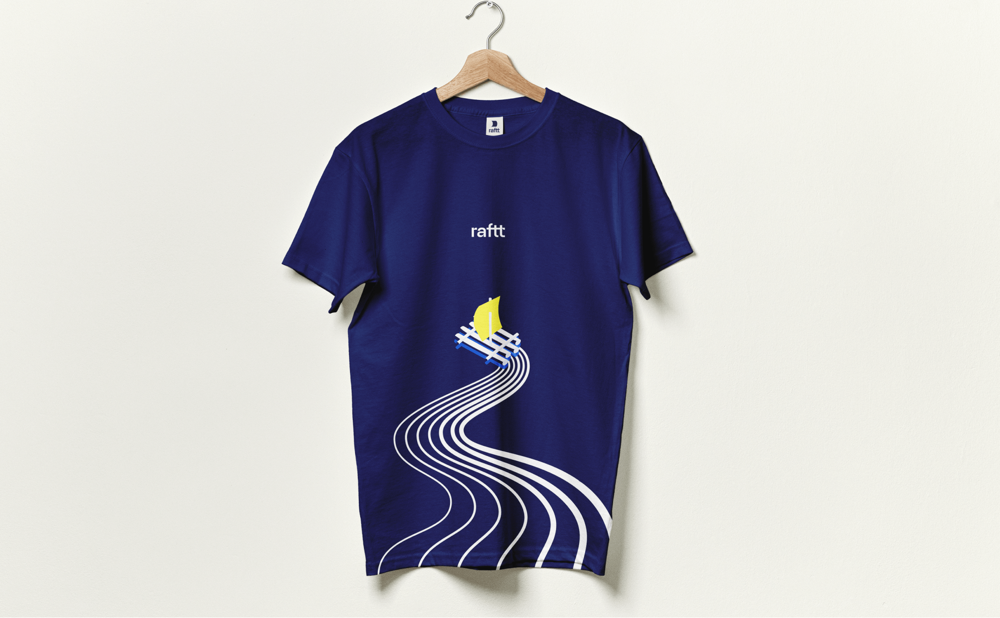
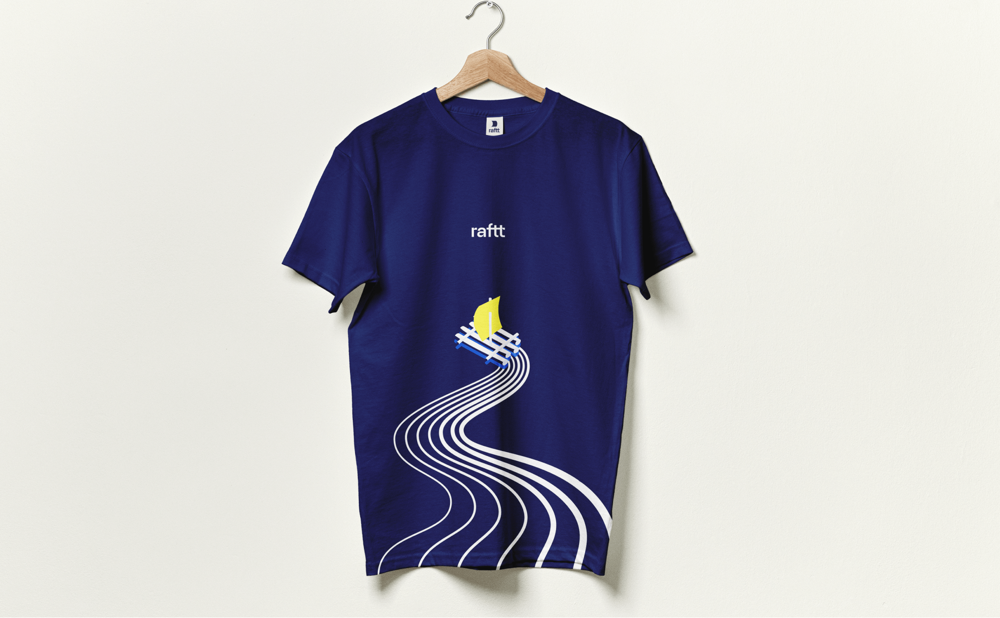

A 10-day Brand sprint for Raftt
Raftt (as in rafting, yes) creates modern, flexible environments that
seamlessly integrate SW developers' tools, workflows, and features. With
Raftt, developers no longer have to be confined by their hardware.
Instead, they can create an unlimited number of environments,
collaborate and share, and enjoy stability, consistency, and
performance.
Client |
Raftt
Art Director | Eden Vidal
Brand
Designer | Anastasia Vlasenko, Kate Holub
Illustrator | Kate Holub
Animation | Thoughts In Motion
Web Devlopment | Michael
Schwartz


 

 


 

 
